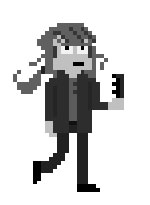

Okin geht zum Friseur
Jakob Schreier – D 2012 — 10 Min. – dt. OF — 16mm/DVD
R: Jakob Schreier – K: Lorenz Weissfuss Mit Okin Cznupolowsky

Das Portrait des Musikers und Künstlers Okin Cznupolowsky, dem post-avantgardistischen Schlagersänger und selbsterklärten "besten Solo-Musiker der Welt". Der Film behandelt den schmalen Grad zwischen Tragik und Komik, Ironie und Realismus, Bewusstsein und Naivität, sowie Genie und Blödsinn – HFF München
Grafik: Okin Cznupolowsky
Jakob Schreier, geb. 1986 in München. Nach seinem Studium der Philosophie an der LMU München begann er ein Studium im Fach Drehbuch an der HFF München. Neben diesem ist er als Autor für verschiedene Fernsehformate tätig, wie zum Beispiel die ZDF Heute-Show, Schlachthof und Grünwald Freitagscomedy.